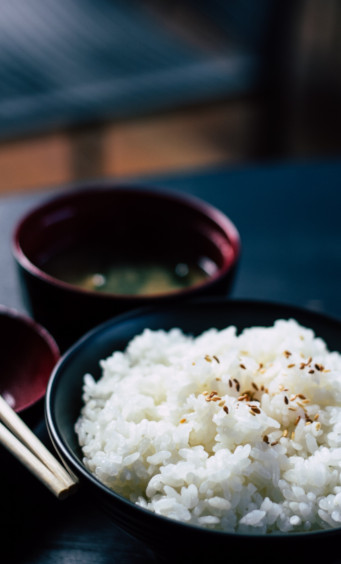
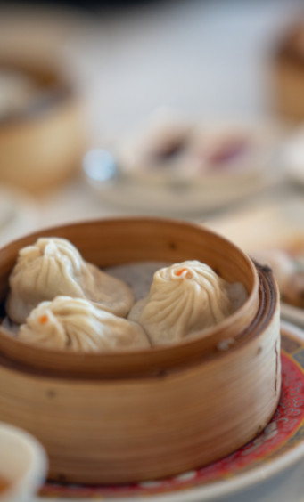
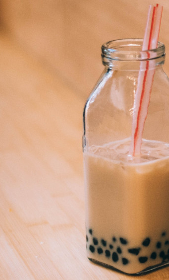

Beilagen
| Misosuppe mit Tofu
味增湯
| Marinierter Algensalat mit Tofu
紫菜豆腐沙拉
| Gedämpfter Wasserspinat mit Knoblauch
炒空心菜
| Gedämpfte Stangenbohnen mit Knoblauch
乾煸四季豆
| Frühlingsrollen mit Gemüse
春捲
| Gebratener Reis mit Schweinefleisch & Ei
肉絲蛋炒飯
| Gebratener Reis mit Gemüse
蔬菜炒飯
Xiaolongbao
| Xiaolongbao mit Schweinefleisch
豬肉小籠包
| Xiaolongbao mit Hühnchen
雞肉小籠包
| Xiaolongbao mit Garnelen
鮮蝦小籠包
| Xiaolongbao mit Trüffel
松露小籠包
| Xiaolongbao mit Trüffel und Schweinefleisch
松露豬肉小籠包
| Xiaolongbao mit Gemüse
鮮蔬小籠包
Dessert
| Milk Tea mit Tapioca
珍珠奶茶
| Rose Milk Tea mit Tapioca
玫瑰珍珠奶茶
| Brown Sugar Tea mit Tapioca
黑糖珍珠奶茶
| Hausgemachte Sojamilch
自製豆漿
| Chrysanthemen Tee (heiß oder kalt)
菊花茶（熱或冷）
| Zitronen Tee (heiß oder kalt)
檸檬茶（熱或冷）
| Mango Smoothie
芒果冰沙
| Xiaolongbao mit Schokolade
巧克力小籠包
| Sesam Mochi in süßer Suppe (heiß)
芝麻湯圓
| Tofu Pudding
豆花